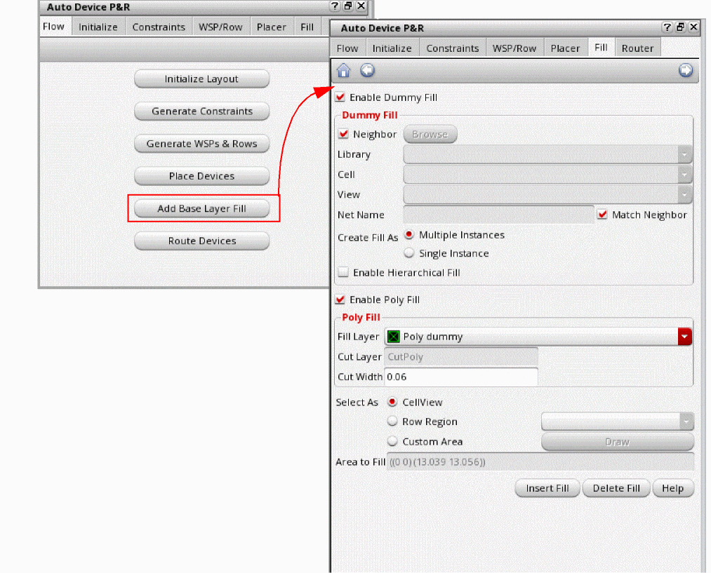

3
Placing and Routing the Design
This chapter covers the following topics:
Placing Devices
After initializing the layout and generating the required constraints and tracks, the next task is to place the devices and pins within the PR boundary. The Virtuoso automated device placement and routing flow supports two placement models:
- Automatic Placement: Placement is performed by running the Virtuoso device-level automatic placer.
- Interactive Placement: Devices are placed semi-automatically. Depending on the placement needs and the complexity of the design, you can first run the Virtuoso device-level automatic placer, and then use the interactive placement options to refine the placement.
Automatic Placement
The Virtuoso device-level placer analyzes the constraints from various sources, such as Modgens, Constraint Manager, figGroups, and circuit finder, and runs the global placer to achieve the required placement results without any design rule violations.
To run the Virtuoso device-level automatic placer:
-
Click Place Devices on the Flow tab of the Auto Device P&R assistant to open the Placer tab.
-
Select one of the following placement objectives:
- Area Only: Place devices to optimize compactness.
- Wire Length Only: Minimizes the wire length for better routability.
- Area and Wire Length: Achieve a balance between compact placement and reduced wire length. -
Select one of the following options to specify the placement region:
- Aspect Ratio: Generates a placement boundary as per the specified dimensions. The default value is 1.00, which specifies a square boundary. An aspect ratio of .50 specifies a boundary twice as high as it is wide. A value of 2.00 specifies a boundary twice as wide as it is high. Multiple placement results can be obtained for different aspect ratios. Examples:- PR Boundary: Fits all the objects inside the existing PR boundary. The placer does not adjust the boundary.In the Aspect Ratio mode, you can set autoPlaceAdjustBoundary totto let the placer adjust the PR boundary to enclose all the components in the design. You can also set autoPlaceAdjustRowRegion totto let the placer adjust the row regions during placement.To enable the placer to follow the aspect ratio specified in the initialization step, set PR Boundary as the placement region. Otherwise, the placer follows the aspect ratio specified in the placement options.To lock the aspect ratio of all Modgens while running the placer, set autoPlaceLockFGAR tot. The aspect ratio-related settings defined in the Auto Device Array form are ignored. When set tonil(default), the aspect ratio settings in the Auto Device Array form are honored while running the placer. -
Click Run Auto Place to run the placer.
Click Run ECO Place to run the placer to incrementally place the non-optimally placed devices, such as the unplaced, overlapping, non-grid compliant, and non-row compliant devices. These devices are placed based on their connectivity with the placed components, while honoring all constraints and grids. The incremental placer runs without changing the aspect ratio of the figGroups and Modgens. The incremental place run results depend on the starting layout.
When you run the placer, a progress bar that indicates the placement status is displayed at the bottom-right corner of the design canvas. The run placer button changes to the stop placer button, which lets you stop the placer and revert the design placement to its initial state.
The following image depicts the automatic row-based, constraint-compliant placement of devices and groups achieved after running the Virtuoso device-level automatic placer.
Interactive Placement
To run the device-level interactive placer:
- Select Context Menu to display a shortcut menu that lets you perform context-sensitive operations on devices and device groups directly in the layout canvas. For more information, see Interactive Placement Using the Context Menu.
- Select Row Snapping to display row snapping-related details in the Information pane during interactive placement of devices.
-
Select WSP Snapping to display SP and WSP snapping-related details in the Information pane during interactive placement of devices.
Interactive Placement Using the Context Menu
Select Context Menu in the Interactive Placer section to display a shortcut menu when you select devices and device groups in the layout canvas.
The following images show the context-sensitive menus for devices and device groups.
The context menu lists the following interactive placement options:
-
Group and Ungroup Devices: Lets you group and ungroup the selected devices. The relative positions of the grouped devices are always maintained. Grouped devices can be in the same or different rows. Devices in a group are abutted horizontally.
The following image shows the vertical grouping of devices across two different rows.
In the following image, a device is moved to a new location. The other devices in the group are also moved to new locations to maintain the relative positions of the grouped devices.
You can merge two or more device groups by selecting the groups and then selecting Group from the context menu. -
Taller: Stacks the selected devices vertically. This option is applicable only for grouped devices.
The following example shows the effect of choosing the Taller setting for a horizontal group of devices.
When you move a stacked device, the associated grouped devices are also moved to new locations so that their relative positions are maintained. - Wider: Arranges the selected devices horizontally. This option is applicable only for grouped devices. Therefore, when you move a grouped device, the relative positions of the other devices in the group are also updated.
-
Spread Any: Moves existing devices in any direction to avoid overlaps. This option is applicable when you move a device to a position where there is another (overlapping) device. The device that you moved is placed at the new location, while the existing device is moved to avoid overlaps. An arrow indicating the direction of movement is displayed.
-
Spread X: Moves existing devices in the X-direction to avoid overlaps. This option is applicable when you move a device to a position where there is another (overlapping) device. The device that you moved is placed at the new location, while the existing device is moved to avoid overlaps.
An info balloon that summarizes the following information is displayed:
- Total wire length
- Change in wire length
- Row to which the device has snapped
- Snap pattern to which the device has snapped - Edit Group: Displays the Auto Device Array form. Use the options in the form to create and edit Modgens. For more information about the form, see Generating Modgens Automatically.
- Insert Row Above: Inserts a blank row above the selection.
- Insert Row Below: Inserts a blank row below the selection.
Adding Base Layer Fill
After device placement, there might be some gaps in the layout design. The unfilled area might also result from the Utilization setting on the Initialize tab. Running a DRC check on the design at this point could report several spacing violations. To avoid these violations, you must generate base layer fill in the unfilled area, between devices. Base layer fill, which includes device, poly, and cut poly fill, are critical for density (manufacturing and matching) reasons at advanced nodes. The automated device placement and routing flow provides a unified interface for adding all types of base layer fill. To generate device fill:
-
Click Add Base Layer Fill in the Auto Device P&R assistant to open the Fill tab.
 - Ensure that Enable Dummy Fill is selected to add dummy fill.
-
Specify the required options in the Dummy Fill section.
- Select one of the following options to specify the instance to be considered as the master for creating dummy fill.
- Select Neighbor to create dummies that match the neighboring active devices. This option is selected by default.
- Specify the Library, Cell, and View of the master cellview when Neighbor is not selected.
- Specify the Net Name to which the dummy fill must be connected.
- Select Match Neighbor to match the connectivity of the dummy devices to the bulk net of the neighbor. The bulk net of the neighbor is assigned to the gate, source, and drain terminals of the dummy devices, unless the source and drain terminals overlap (abut) the active device terminals on a different net. Match Neighbor is selected by default. When unchecked and Net Name is blank, the dummy device terminals are not assigned any net unless they overlap (abut) an active device terminal to inherit its net.
- Select the required option from the Create Fill As section:
-
Multiple Instance mode inserts multiple dummy fill as per the setting of the dummyFillNeighborMultipleMode environment variable. When set to
singleFinger, single-fingered multiple dummy instances are created. When set toexactCopy, dummies are created as exact copies of their neighboring instances. - Single Instance mode inserts each dummy fill as a single instance with multiple fingers to fill the gaps and empty rows.
- Select Enable Hierarchical Fill to look through the hierarchy to identify gaps that need to be filled.
- Ensure that Enable Poly Fill is selected to insert poly fill.
-
Specify the required options in the Poly Fill section. Poly fill extend the gate poly and add cut poly rails as per the DRC rules. As part of poly fill, the tool supports poly extensions, cut poly rails, and local interconnect layers, along with rails on the associated cut layer.It is recommended that you do not place the same type of devices with different bulk nets in the same row. If present, extra space is left while inserting dummy fill to avoid shorts.
To insert poly fill and cut poly:-
Select the Poly Layer to derive cut-poly rails. The default value is the first layer-purpose pair that has its layer function set to
Poly. - Specify the maximum Poly Fill Width by which the fill can be extended. The default value is set to the minimum width value for the cut layer as defined in the technology file.
-
Specify the Cut-Poly Layer Width. The default value is
0.0u.
-
Select the Poly Layer to derive cut-poly rails. The default value is the first layer-purpose pair that has its layer function set to
-
Specify the area to be filled using one of the following options:
- CellView (default): Inserts device fill in all row regions in the current cellview.
- Row Region: Inserts device fill only in the row region you select from the drop-down list.
-
Custom Area: Inserts device fill in the custom area drawn. You can either use Area to Fill to specify the area coordinates or click Draw to draw the required area in the canvas.
- Click Insert Fill to generate the required dummy and poly fill as per your specifications.
The following image depicts a placed design for which automatic DRC-compliant base layer fill (Dummy and Poly) have been added.
- The dummy fill cells match the neighboring active devices.
-
The poly fill cells extend the gate poly and add cut poly as per the DRC.
Select instances in the schematic to view the dummy fill around these devices. You can also see the gate poly of the devices being extended by the poly fill and the cut poly rails between rows of devices.
Why are poly fill not generated?
Poly fill might not be generated due to various design scenarios and constraints. To generate poly fill correctly, check the following settings:
- Ensure that there are no diffusion areas. Poly fill do not fill the diffusion areas.
- Check for any spacing rules between diffusion areas and poly shapes. Ensure that these rules are adhered to.
- Ensure that the selected area is inside the cellview boundary.
- Ensure that the poly shapes are aligned properly along the poly grid. If not aligned, a warning message is displayed and poly fill are not inserted.
-
Check whether the
allowedLengthRangesrule is set for the specified fill layer in the technology file. If set, ensure that the spacing left for the poly fill in the selected area is sufficient to accommodate the poly fill.
Deleting Fill
- Select the required options in the Dummy Fill and Poly Fill areas to indicate the device fill to be deleted.
- Click Delete Fill.
Routing the Design
The final step in the automated device placement and routing flow is device routing. You can use the Tree Router, which is the automatic device-level router to route your design.
To route a design, click Route Devices in the Auto Device P&R assistant to open the Router tab.
Click Enable Tree Router in Wire Assistant to open the Wire Assistant.
The Auto Device Routing preset is selected by default. In this mode, the Tree router is used for routing. The Tree router automatically identifies and routes mesh, ring (tap cell rings), and tree structures in the design.
The following image shows an automatically placed and routed design that is WSP-based, DRC-correct, and constraint-compliant.
For more information about running the tree router, see
Return to top